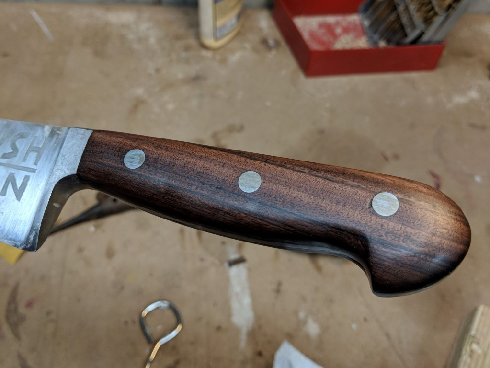

Since middle school I have loved tinkering around in my Dad's small shop and have come to make it in a small part my own. Since then I have had to oppertunity to work larger endeavors in a variety of domains helping to build new experiences and approaches. Learining to operate manual machine tools, CNC mills, weld, smith, and build electrical and sytems has alowed me to expand the scope of my projects significantly.
Alder and Walnut Chess Board
Posted: December 28th, 2023
Project: December 2022
.jpg)
For Christmas of 2022 I gifted my younger brother a chess board. We often play together, especially over holdays and family trips. The tiles are made of walnut and alder for the dark and light tiles respectively. The pieces were puchased and seem to fit the scale of the board nicely.
Read OnVee Shaped Ukulele
Posted: Febuary 3rd, 2023
Project: October 2017
.jpg)
Ukulele made of mahogony with an oak back. Given away as a gift to a friend.
Read OnMiniature Aluminum Pen
Posted: December 30th, 2022
Project: 2017
.jpg) Read On
Read On
Assorted Wood Projects
Posted: December 30th, 2022
Project: 2016-2019
.jpg) Read On
Read On
Aluminum QR Tags
Posted: December 25th,2021
Project: December 2021
.jpg) Read On
Read On
Plywood and Ceder Bed Frame
Posted: December 19th, 2021
Project: August 2020
.jpg) Read On
Read On
Wood Desk from Scraps
Posted: January 15th,2021
Project: May 2020
.jpg) Read On
Read On
Turn Table Table
Posted: January 15th,2021
Project: August 2019
.jpg) Read On
Read On
Blacksmithing Forge and Setup
Posted: Febuary 18th, 2021
Project: March 2018
.jpg)
This is a simple forging setup I fabricated in my highschools machine shop. The forge itself is a cast iron brake drum with angle iron legs and steel top to manage coal. The anvil is just a heavy steel scrap with an odd rounded part which works nice for more agressive drawing operations, it can be used somewhat like a tradditional horn though without as much clearence underneath.
Read OnIncense Holder
Posted: October 1st, 2020
Project: July 2018
.jpg)
This is a simple incense stick holder I made for a friend's birthday. Despite how simple it is manufacturing the features on top was really interesting. I used an end mill and router bit in the drill press to carve the two cuts that defined the catch.
Read OnKitchen Knife Handle
Posted: October 21st, 2020
Project: August 2018

The ebony handle to my mother's large kitchen knife was starting to fall apart, and though it was not of extraordinary quality to begin with I made a simple replacement out of walnut. I also etched a simple family logo I designed into the blade.
Read On